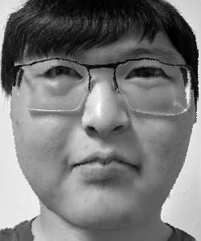

Name: Brandon Wong
The goal of Project 3 is to morph pairs of images of faces from one to another and anywhere in between, changing both shape and colors in differing amounts. By taking matching points in different images and enabling the triangles obtained from those points to morph into each other, faces can be manipulated and morphed in interesting ways to obtain a variety of results. The first three parts are developing the morph and morphing my face with a friends. The rest of the parts are doing interesting things with the results from previous parts.
In this first part, the corresponding points between my face and my friend's face were placed in the pair of images. This was done using the labeling tool given in the project spec linked here. After obtaining the points, the Delaunay triangulation was calculated on the points from my face and applied to the points from both images.
My face
Friend's face
My face with triangulated points
Friend's face with triangulated points
In this part, the mid-way image of a morph between the two was calculated from the triangulation made in the previous part. The first step was to calculate the average shape of both images by finding the averages of the corresponding points obtained on them. The second step was warping both faces to that shape by finding an affine trainsformation matrix converting each triangle into the next and using an inverse warp to avoid holes, applying this to every pixel within the triangle. The final step is averaging the colors of the corresponding triangular section interpolated via nearest neighbors to get the resulting colors for the average from the original images.
My Face
Mid-way Face
Friend's Face
In this part, I finally put together the code for performing the morph based on the code for the average (the same thing except with warp fractions and dissolve fractions different from 0.5) and used it to find the images for 43 evenly separated points in the morph between my face and my friend's face. These points plus the original images to make 45 points were then put together into a 1.5 second gif displaying the morph sequence formed from 45 frames at 30 frames per second.
Gif of my friend's face becoming my face
(The gif may not loop, if so, please reload the page to see morph again)
In this part, I used the spatially normalized frontal images with corresponding points already manually annotated for each image from the FEI Face Database linked here. The images I used were 200 images of people facing the camera with neutral facial expressions, 100 male and 100 female images. The images were already annotated with 46 corresponding points in each image. The mean face was found from these images, and then I warped the shape of ten of the images to that average and shown below after their originals.
Average of FEI Face Database Faces
Original 1
Example 1
Original 2
Example 2
Original 3
Example 3
Original 4
Example 4
Original 5
Example 5
Original 6
Example 6
Original 7
Example 7
Original 8
Example 8
Original 9
Example 9
Original 10
Example 10
I also found the resulting image from my face converted into the geometry of the mean face and vice versa.
My Face to Mean Face
Mean Face to My Face
In this part, I obtained a neutral expression caricature of my face using the average of neutral faces from the previous part and the equation result = im1_points + alpha * (im2_points - im1_points) to obtain the corresponding points for warping. I then put these new corresponding points through the rest of the standard morph function to obtain an exaggerate neutral expression face of my face based on the average neutral expression face, exaggerating the shape of the neutral expression face while having the colors of my own. This ended up as an exaggerated version of the my face to mean face of the previous part.

Neutral Caricature of My Face
In this part, I used a mean east/southeast asian woman image found on google to try and switch the visible gender of my image (chosen since I'm east asian myself). I found a variety of different morphs between them: one of just the shape, one of just the appearance, and one of both but not to the full extent. The morph of both (essentially the midpoint between the two images) appeard to have the best result. The results are shown below.
Me
Morph Shape
Morph Appearance
Morph Both
Mean East Asian Woman